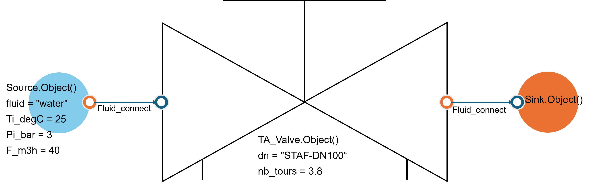
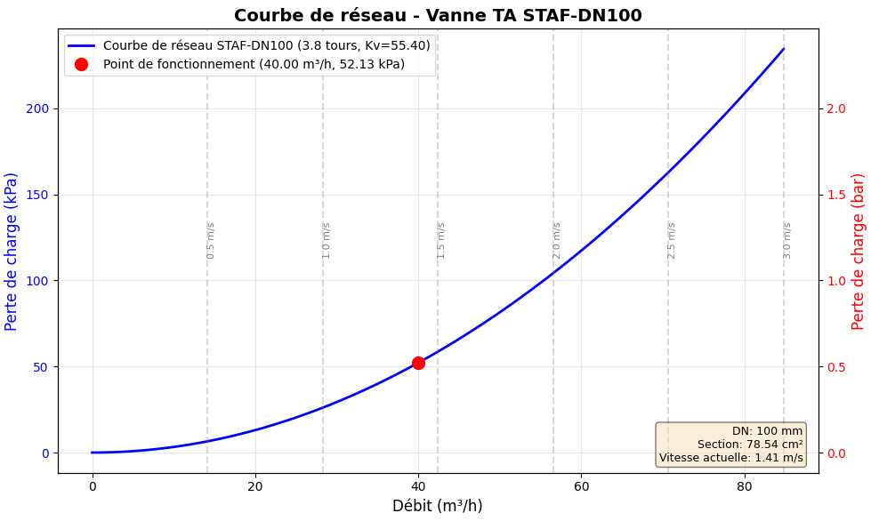

Vanne d’équilibrage TA (Tour & Andersson / IMI Hydronic)
Les vannes d’équilibrage TA (Tour & Andersson / IMI Hydronic Engineering) permettent l’équilibrage hydraulique des circuits CVC for garantir les flow rates nominaux et optimiser la performance energy des installations.
Cette classe Python calcule les pertes de charge à travers différents models de vannes TA en utilisant les data Kv officielles du fabricant IMI TA en fonction du nombre de tours d’ouverture.
Usage
{kind=link}

from ThermodynamicCycles.Hydraulic import TA_Valve
from ThermodynamicCycles.Source import Source
from ThermodynamicCycles.Sink import Sink
from ThermodynamicCycles.Connect import Fluid_connect
# Configuration de la source d'eau
SOURCE = Source.Object()
SOURCE.Ti_degC = 25 # Température d'entrée : 25°C
SOURCE.Pi_bar = 3.0 # Pression d'entrée : 3 bar
SOURCE.fluid = "Water" # Fluide : eau
SOURCE.F_m3h = 40 # Débit : 40 m³/h
SOURCE.calculate()
# Configuration de la vanne STAF-DN100
VALVE = TA_Valve.Object()
VALVE.dn = "STAF-DN100" # Type : STAF-DN100 (bride fonte, PN 16/25)
VALVE.nb_tours = 3.8 # Ouverture : 3.8 tours (interpolation auto)
Fluid_connect(VALVE.Inlet, SOURCE.Outlet)
VALVE.calculate()
# Configuration du puits (sink)
SINK = Sink.Object()
Fluid_connect(VALVE.Outlet, SINK.Inlet)
SINK.Po_bar = 2.0
SINK.calculate()
# Affichage des résultats
print(VALVE.df)
VALVE.Plot()
Note
Le Puits (Sink) impose sa pressure de output (2.0 bar = 200000 Pa) à la vanne. La pressure d’input de la vanne est donc recalculée automatiquement as a function of la perte de charge :
P_input = P_output + ΔP = 200000 Pa + 52131.53 Pa = 252131.53 Pa
Results
Flow rate (m3/h) 40.0
Number de tours 3.8
Diameter nominal (DN) STAF-DN100
Kv 55.4
Pressure d'input (Pa) 252131.527845
Loss de charge (Pa) 52131.527845
Pressure de output (Pa) 200000.0
Courbe de réseau de la vanne :
{kind=link}

Paramètres possibles
Types de vannes TA disponibles
La classe TA_Valve supporte plus de 120 références de vannes d’équilibrage IMI TA :
Série |
Plage DN |
Application typique |
|---|---|---|
STAD |
DN10-50 |
Réseaux secondaires filetés (PN 25) |
STAV |
DN15-50 |
Réseaux secondaires Venturi économiques (PN 20) |
TBV / TBV-C |
DN10-20 |
Unités terminales : radiateurs, ventilo-convecteurs (PN 20) |
STAF |
DN20-400 |
Réseaux primaires fonte à brides (PN 16/25) |
STAF-SG |
DN65-400 |
Grands réseaux fonte GS haute résistance (PN 16/25) |
STAG |
DN65-300 |
Installation rapide with raccords rainurés Victaulic (PN 16) |
STA |
DN15-150 |
Anciennes installations (maintenance) |
STAP / STAM |
DN15-100 |
Régulateurs ΔP for équilibrage dynamique |
MDFO |
DN20-900 |
Orifices fixes de mesure (Kv fixe) |
Note
Le paramètre dn peut être spécifié under forme de chaîne (ex: “DN65”, “STAF-DN100”) ou d’entier (ex: 65).
Paramètres de configuration
Paramètre |
Description |
Unité |
|---|---|---|
nb_tours |
Number de tours d’ouverture de la vanne (0 for régulateurs/orifices fixes) |
tours |
dn |
Diameter nominal ou référence de la vanne (chaîne ou entier) |
|
q |
Flow rate volumique calculé à partir du flow rate massique |
m³/h |
Kv |
Coefficient de flow rate according to tables IMI TA (interpolé si nécessaire) |
m³/h |
delta_P |
Loss de charge à travers la vanne |
Pa |
rho |
Masse volumique of the fluid (calculée via CoolProp) |
kg/m³ |
Ti_degC |
Temperature d’input |
°C |
Pi_bar |
Pressure d’input |
bar |
F_m3h |
Flow rate volumique |
m³/h |
F_kgs |
Flow rate massique |
kg/s |
Inlet |
Port d’input of the fluid |
FluidPort |
Outlet |
Port de output of the fluid |
FluidPort |
Note
Les propriétés thermodynamiques of the fluid (densité, viscosité) sont calculées automatiquement via CoolProp as a function of la temperature et de la pressure.
Conseils de sélection :
Réseaux primaires (> DN50) : Préférer STAF, STAF-SG ou STAG
Réseaux secondaires (DN15-50) : Utiliser STAD ou STAV
Unités terminales : Choisir TBV ou TBV-C
Équilibrage automatique : Utiliser STAP ou STAM
Orifices de mesure : MDFO for mesure TA-Scope
Dimensionnement :
Calculer le flow rate nominal du circuit
Sélectionner le DN for une perte de charge between 3 et 15 kPa au flow rate nominal
Vérifier la plage de réglage disponible (nombre de tours)
Prévoir une marge for les ajustements futurs
Warning
Ne pas dépasser les limites de temperature of the fluid (typiquement -20°C à +120°C)
Respecter les pressures nominales PN 16/20/25 according to les models
Vérifier la compatibilité fluid/matériau (eau glycolée, etc.)
Pour régulateurs (STAP, STAM, STAZ) et orifices fixes (MDFO), utiliser nb_tours = 0
Explication du model
Principe du coefficient Kv
Le coefficient Kv représente le flow rate d’eau en m³/h traversant la vanne with une perte de charge de 1 bar à 15-20°C. Plus le Kv est élevé, plus la vanne laisse passer de flow rate for une perte de charge donnée.
Équations de calcul
1. Flow rate volumique à partir du flow rate massique :
Où :
Q : Flow rate volumique (m³/h)
ṁ : Flow rate massique (kg/s)
ρ : Masse volumique of the fluid (kg/m³)
2. Loss de charge en fonction du Kv :
Où :
ΔP : Loss de charge (Pa)
Q : Flow rate volumique (m³/h)
Kv : Coefficient de flow rate for l’ouverture donnée (m³/h)
10⁵ : Facteur de conversion (1 bar = 10⁵ Pa)
Example de calcul :
Pour Q = 70 m³/h et Kv = 81.4 m³/h :
3. Interpolation du Kv :
Si le nombre de tours ne correspond pas exactement à une valeur tabulée, une interpolation linéaire est effectuée :
Example d’interpolation :
Pour une vanne STAF-DN100 with 4.3 tours (entre 4 tours et 4.5 tours) :
Kv(4 tours) = 66 m³/h
Kv(4.5 tours) = 91.7 m³/h
Interpolation : Kv(4.3) = 66 + (91.7-66) × (4.3-4)/(4.5-4) = 66 + 25.7 × 0.6 = 81.4 m³/h
4. Conservation des propriétés thermodynamiques :
À travers la vanne (transformation isenthalpique) :
Flow rate massique conservé : \(\dot{m}_{output} = \dot{m}_{input}\)
Temperature conservée : \(T_{output} = T_{input}\)
Pressure réduite : \(P_{output} = P_{input} - \Delta P\)
Sources des data et références
Les data Kv utilisées proviennent de la documentation technique officielle IMI TA :
Sources documentaires :
STAD_PN25_FR_FR_low.pdf : Tables Kv for vannes STAD DN10-50
STAF_STAF-SG_EN_MAIN.pdf : Tables Kv for vannes STAF et STAF-SG DN20-400
Catalogues techniques IMI Hydronic Engineering
Fiches produits TA-Scope (MDFO, STAP, STAM)
Certification et conformité :
Valeurs Kv certifiées according to EN 1267 (Robinetterie industrielle)
Normes PN 16, PN 20, PN 25 according to les models
Compatible with systems de mesure TA-Scope et TA-Surveyor
Documentation complémentaire :
Site officiel : https://www.imi-hydronic.com
Logiciel : TA-Designer (dimensionnement de réseaux hydrauliques)
Formation : Équilibrage hydraulique et usage du TA-Scope